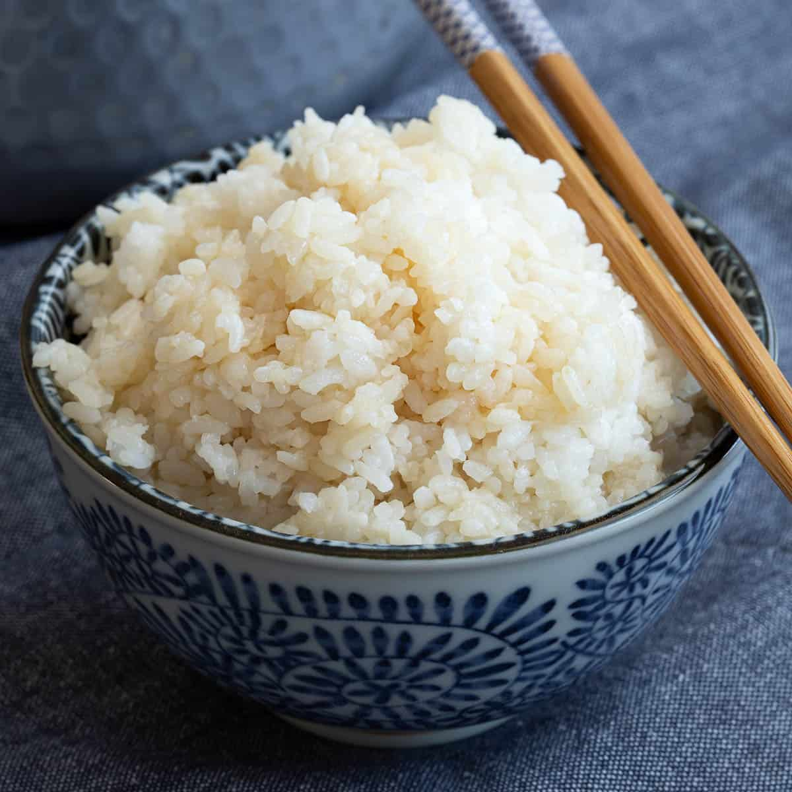

Sushi Rice

Description
This delicious Japanese rice is perfect for all styles of sushi and maki roll, or even on it's own.
Ingredients
- 2 cups uncooked short grain rice(sushi rice)
- 3 cups water
- 1/2 cup rice vinegar
- 1 tablespoon vegetable oil
- 1/4 cup white sugar
- 1 teaspoon salt
Steps
- Gather all ingredients.
- rinse the rice in a strainer under cold water until water runs clear.
- combine rice and water into saucepan over med-high heat and boil. Reduce heat to low, cover and cook
until rice is tender and all water is aborbed, 20 minutes. Remove from stove and let cool.
- Meanwhile, combine vinegar, oil, sugar, salt over med heat. Cook until sugar dissolves, then cool.
Stir into cooked rice until dry and cool to handle.
- Enjoy!